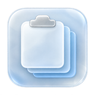
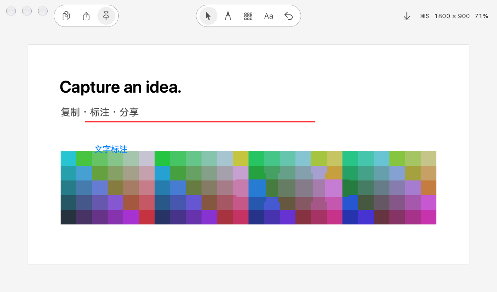
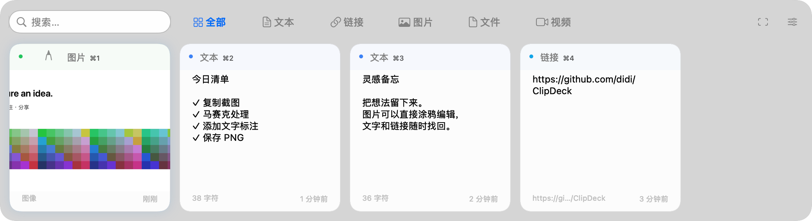

01
复制过，就找得到。
文字、链接、图片、文件与视频，自动归类。搜索历史，找回上一条好点子。
文本链接图片文件视频
本地历史，随时回看

ClipDeck刚复制的文字，刚截下的画面，刚冒出的想法。
用 ClipDeck 接住，再顺手完成下一步。


少一点来回，多一点顺手
把常用的小动作连起来，
让工作流保持在你手边。
文字、链接、图片、文件与视频，自动归类。搜索历史，找回上一条好点子。
单击捕获窗口，拖动框选区域。截图自动复制，短预览停留 2 秒；点一下，就留下。
画一笔、遮一块、加一行字。截图或历史图片都能编辑，完成后复制合成图或保存 PNG。
手不用离开键盘
呼出、查找、粘贴，一气呵成。
四组全局快捷键，可在设置中自定义。
编辑时：⌘Z 撤销 · ⌘C 复制 · ⌘S 保存
文本标注：⌘↩ 完成 · Esc 取消
给灵感留个位置
适用于 macOS 13 及以上版本。
可从项目源码在 Mac 上构建。需要 Swift 6 工具链；安装后在应用设置中检查权限。
查看 GitHub 项目 当前项目为私有仓库，需要访问权限。bash scripts/build.shbash scripts/install.sh自动粘贴需要辅助功能授权，截图需要屏幕录制授权。默认构建使用 ad-hoc 签名。